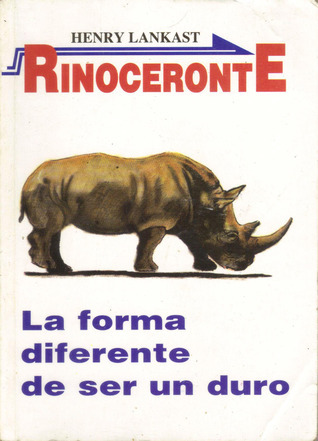
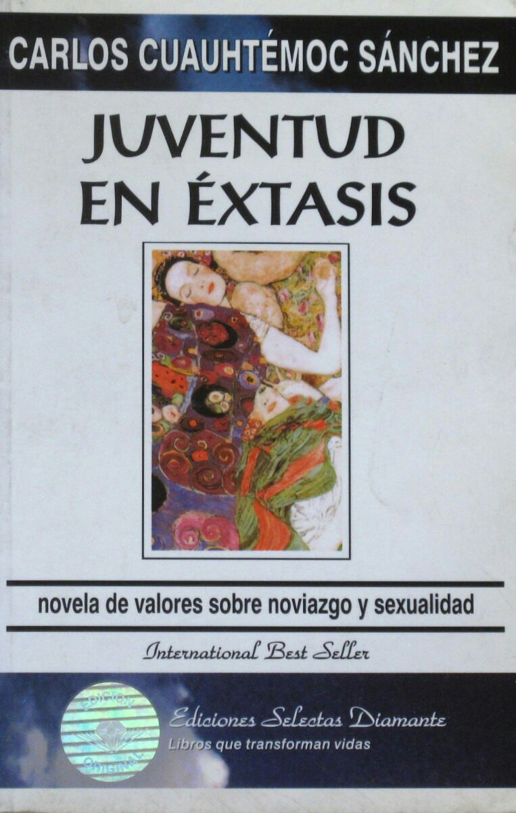

BioTechnology
Estilo de vida inactivo el cual hoy en la actualidad ha sido reforzado por la tecnología que nos quita de encima muchas tareas que antes realizámbamos por nuestra cuenta, como por ejemplo salir del hogar en busca de una pelicula nueva para alquilar. Ahora bien con algunas cuantas interaciones con nuestro movil podemos ver la pelicula que se nos venga a la mente sin movernos del lugar.
El problema no está en las facilidades que tenemos en la actualidad, sino en el abuso de esas facilidades y en los malos hábitos que hemos aquirido ante tanta comodidad.
No llenarte de información que puedes encontrar en muchas más paginas, sino hacerte reflexionar sobre tu propio estilo de vida mediante la comparación de los habitos más comunes sedentarios que tal vez estes replicando y las consecuencias que pueden provocar.
Sobre Peso
Obecidad
Fatiga Visual
Dolores de Cabeza
Alteración del sueño
Difilcutades para dormir
Dificualtad de cocentración
Reduce el pensamiento crítico
Riesgo de Atorarse
Distracción que impide reconocer saciedad
Cuello Caído
Deformidades en el cuerpo
Te la pasas horas en tu telefono pasando video tras video, jugando algún juego o alguna cosa más que parece entretenerte, pero sileciosamente te quita lo más valiso que tienes, así es tu tiempo. No digo que el telefono sea algo malo, pero no estaría mal que de vez en cuando lo dejes a un lado y tal vez podrías leer un libro o quien sabe. No está demás recomendarte estos libros.


"Rinoceronte" un extraordinario libro que te habla sobre exito, pero no te dice como conseguirlo, sino como piensa un rinoceronte que siempre está a la !carga!. Y no se diga de "juventud en un extasis" también un extraordinario libro que te enseña sobre lo que es la sexualidad en verdad y los noviasgos adolecentes que en muchas ocasiones podemos tener ideas equivocadas sobre dichos temas.
Pensar en que todo se hara por si solo. Muchas veces no nos esforzamos por lograr algo a una edad juvenil y lo unico que hacemos es pasar el tiempo en entretenimientos excesivos que no aportan nada a nuestras vidas y puedo asegurarte amigo que eso a nada te llevara, pero podrías empezar a romper con el sedentarismo con un poco de ejercicio físico y por que no iniciar una rutina con Fausto Murillo.
Puedes comenzar con está rutina muy recomenda para romper con el sedentarismo practicandola cada dos días o cada uno.
Solo en ti está el deseo de mejorar y son varias las formas o cosas que puedes hacer para salir de aquellos habitos que te consumen conciente o incocientemente. Yo te he recomendado algunas, pero tu decides que hacer, cuando hacerlo y el proposito por el cual lo haces.